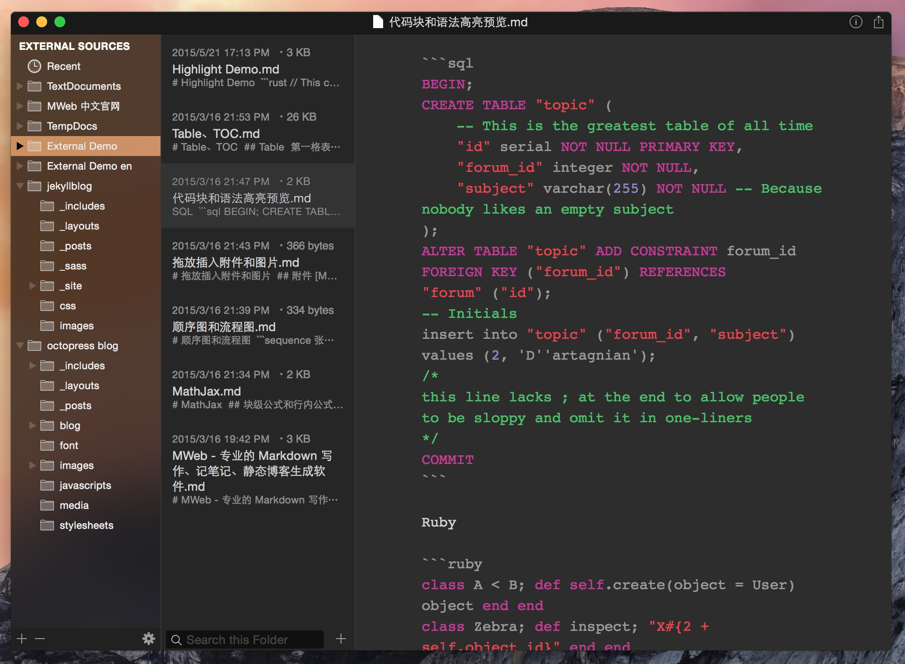
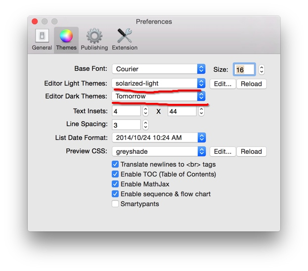

Resize window when hide pane
C++ 博大精深，用途广泛，虽然现在新语言不断，好语言不少，但是 C++ 的王者地位就从来没有被撼动过，然后我认为，计算机软件方面的东西，并不是越新越好，而是历史越久的，现在也还在广泛使用的东西，通常都是成熟稳定的，都是经得起现实世界考验的！
C++ 太难学了，但是如果只针对特定领域，只学习跟特定领域相关的，我想应该会容易入门一点。我学习 C++ 的目的是为了用 UE4，所以就只针对 UE4 做优化学习了。
这一版主要是修正 EL Capitan 的问题。
由于很快就中秋了，到时候博主要回乡下过中秋，加上 EL Capitan GM 版非常稳定好用，所以就不等 EL Capitan 正式版发布，先提交到 MAS 了。顺便介绍文章也一并发了，也不等审核通过了。
主要改进有：
增加设置图片宽度和居左、居右、居中的语法。 如： 这样表示设置图片宽度为 450。其中 -w450 为设置语法，生成 HTML 时会自动移除。w 表示设置宽度，居左为：-l400，居右为 -r400，居中为 -c400，其中前面的 - 为可选，比如设置一图片宽度为 500 并居中：。 编辑器内显示的图片增加了右键菜单，右键图片即可查看图片大小、打开图片、复制图片。

-w450
w
-l400
-r400
-c400
-

MWeb 1.7 版制作了新的博客/网站主题 mweb-medium-like。这个主题是基于 Foundation 前端框架做的，对移动端非常友好！ 本博客的主题也是使用 mweb-medium-like。
MWeb Lite 版的文档库中的文档要搬到 MWeb 正式版中，如果 Lite 版的文档中没有图片或者只有少量图片，可以用导入导出为 Markdown 的方法。
否则的话请用以下方式（注意下面这个方法会将 MWeb 正式版的所有内容都换为 Lite 版）：
 使用 View - Dark Mode 或快捷键 CMD + Option + L 开启或关闭 Dark Mode。可以在设置中设置 Dark Mode 状态下编辑器所使用的样式，如下图。 
View
Dark Mode
CMD + Option + L
快捷键：CMD + Option + T，菜单：View - Typewriter Scrolling ，效果如下图：
CMD + Option + T
Typewriter Scrolling
» Next Page
Cocoa CG Artist Game Engine MWeb PinPhoto Other
Copyright © 2015 Powered by MWeb, Theme used GitHub CSS.